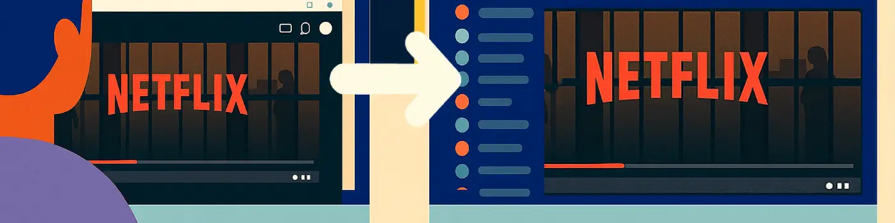

如何在 Discord 上觀看 Netflix：2025 年完整指南
2025年7月2日，《魷魚遊戲》第三季上線，我毫不猶豫地再次訂閱了 Netflix Premium 。但你有沒有想過——這部劇如此精彩刺激，如果能和朋友們一起觀看，並實時互動，豈不是很棒？
好消息：有一個簡單的方法可以實現這一點——只需在 Discord 上播放 Netflix 即可。只需快速設置，你就可以和你的朋友一起觀看《魷魚遊戲》。
Discord 是一款非常受歡迎的語音和文字聊天應用，最初是為遊戲玩家打造的。隨著時間的推移，它已經成為朋友、同事和社區保持聯繫和分享內容的首選平台。
使用 Discord，你可以輕鬆地與朋友同步觀看 Netflix，就像你們都聚集在同一個客廳裡，無論身在何處都可以一起狂看 Netflix 一樣。
如何在 Discord 上觀看 Netflix？
想在 Discord 上和朋友們一起觀看 Netflix 嗎？你只需要一台電腦、一個有效的 Netflix 訂閱和一個 Discord 帳戶。按照以下步驟，即可輕鬆在 Discord 上分享你的 Netflix 屏幕，一起暢享流暢的連線暢享。
如果你尚未安裝 Discord，請前往 官方網站 下載桌面應用程序。Discord 的網頁版不支持帶音頻的屏幕共享，因此桌面版是必備的。安裝完成後，請登錄你的帳戶或註冊一個新帳戶。
登錄 Discord 後，你可以創建自己的服務器，也可以使用現有的帶有語音頻道的服務器。如果你要設置新服務器，Discord 將引導你創建語音頻道並生成邀請鏈接。只需複製鏈接並將其發送給你的好友即可。他們點擊後，即可加入頻道並開始一起觀看。
Netflix 使用 HDCP（高帶寬數字內容保護），這可能會導致你在嘗試共享瀏覽器窗口時出現黑屏。為了避免此問題，你需要在瀏覽器和 Discord 中禁用硬件加速。（我們將在下一部分向你展示具體操作方法。）
打開你喜歡的瀏覽器（推薦使用 Chrome 或 Edge），登錄你的 Netflix 帳戶，然後選擇你想看的電影或節目。建議在視頻開始播放前在簡介畫面暫停一下——這樣你就可以等待朋友們加入並一起點擊播放。
返回 Discord 並進入你創建的語音頻道。在頻道中，點擊左下角的"共享你的屏幕"圖標（它看起來像一個帶箭頭的顯示器）。
系統會彈出一個窗口，詢問你要分享的內容。請選擇 Netflix 正在播放的特定瀏覽器窗口，不要選擇整個屏幕或其他應用。這有助於保持流媒體播放流暢並保護你的隱私。
如果你看到"共享音頻"複選框，請務必勾選，以便你的朋友可以聽到視頻聲音。直播開始後，你的朋友只需點擊"加入直播"即可與你一起實時觀看 Netflix 內容。
如何在Discord上觀看Netflix而不出現黑屏
如果你看到黑屏，通常是因為你的瀏覽器和 Discord 都啟用了硬件加速。要解決這個問題，你需要手動將其關閉。
在 Discord 中，前往
至於瀏覽器，Edge 和 Chrome 之間幾乎沒有區別。只需轉到"設置"，從左側菜單中選擇"系統"，然後關閉"可用時使用硬件加速"選項即可。更改後請務必重新啟動瀏覽器。
禁用硬件加速後，建議以管理員模式重啟 Discord。操作方法：右鍵單擊 Discord 圖標，然後選擇"以管理員身份運行"。這樣可以提高 Discord 的系統優先級，從而解決兼容性問題並提高屏幕共享的穩定性。
完成上述設置後，打開瀏覽器，前往 Netflix，登錄並選擇你想觀看的內容。然後返回 Discord，點擊"共享屏幕"圖標，選擇瀏覽器窗口，即可開始串流。現在，你的朋友可以與你完美同步觀看節目——沒有黑屏，沒有中斷。
你需要什麼才能在 Discord 上觀看 Netflix？
首先，你需要一個有效的 Netflix 訂閱 - 如果沒有它，即使屏幕共享功能正常，也不會有任何內容可觀看。
接下來，請確保你使用的是
一旦你啟動"開始直播"並開始屏幕共享，你可以單擊流窗口上的齒輪圖標來手動調整分辨率和幀速率。
如果你有 Discord Nitro，你將能夠切換到更高的設置（例如 1080p 或 4K 60fps），以獲得最佳的觀看體驗、流暢的播放和穩定的視覺效果。
如何使用 Discord 機器人提升你的 Netflix 觀看體驗
既然你已經學會了如何在 Discord 上與好友一起觀看 Netflix，你可能會想——有沒有辦法和陌生人一起觀看？尤其是當你周圍沒有人和你一樣對某個節目感興趣的時候，找到志同道合的觀眾一起觀看，可以讓觀看體驗更加有趣和引人入勝。
Netflix 和 Discord 精心合作，推出了"Hey， Netflix"機器人，旨在幫助用戶在 Discord 服務器內快速組織觀影派對。只需輸入命令 /heynetflix，機器人就會引導每個人進行投票，選擇內容類型（電視節目或電影）和所屬國家/地區。
然後，它會向所有參與者推薦一個可用的標題，並自動創建一個私人頻道，你可以在其中分享觀看鏈接、討論故事並在觀看過程中保持同步。
雖然該機器人本身不支持視頻直播，但它可以與 Discord 的文字聊天、語音頻道和屏幕共享功能完美配合。這意味著無論身在何處，你仍然可以與一群陌生人一起享受"一起觀看"的體驗，創建屬於你們的虛擬影音室。
如何下載並安裝 Discord Bot
安裝機器人很簡單——只需按照以下步驟操作即可：
- 如果你還沒有帳戶，請訪問Discord 官方網站下載該應用程序並創建一個。
- 登錄後，轉到
Hey，Netflix 機器人的官方頁面或機器人目錄列表。 - 單擊
"邀請" 按鈕將機器人添加到你管理的 Discord 服務器。 - 授予必要的權限並選擇你希望機器人活躍的頻道。
- 添加後，在所選頻道中輸入
/hey 或按照機器人的提示開始。
自從使用了
想要以更低的成本享受 Netflix 嗎？
想找個更實惠的方式觀看 Netflix 嗎？訂閱共享平台或許正是你所需要的——我個人推薦 奈飛小鋪，我一直在用這個。
奈飛小鋪 與值得信賴的供應商合作，以遠低於官方價格的價格提供Netflix 帳戶訂閱服務。就我個人體驗而言，這些帳戶非常穩定，從未遇到任何問題。此外，他們的 24/7 全天候客服響應迅速，無論何時我遇到問題或需要幫助，他們總是樂於助人。
更讓我驚喜的是，他們支持
🎉 立即前往 奈飛小鋪 網站 ，以更低的價格開始你的高品質 Netflix 之旅！
常問問題
可以在 Discord 上播放 Netflix 嗎？
是的，你可以使用 Discord 語音頻道中的屏幕共享功能來觀看 Netflix 內容。只需在瀏覽器中打開 Netflix，禁用硬件加速以避免黑屏，然後通過 Discord 共享瀏覽器窗口即可。這是一種與朋友一起觀看的簡單方法。
如何在 Discord 上分享 Netflix 而不出現黑屏？
要在 Discord 上共享 Netflix 而不出現黑屏，請在瀏覽器和 Discord 中禁用硬件加速。在 Discord 中，前往"設置">"高級"，然後關閉"硬件加速"。在瀏覽器中，前往"系統設置"並禁用相同選項，然後重新啟動。
如何將電影流式傳輸到 Discord？
要將電影串流到 Discord，請使用桌面應用加入語音頻道，然後點擊屏幕共享圖標。選擇播放電影的窗口（例如瀏覽器或媒體播放器），並根據需要啟用音頻。請確保已關閉硬件加速，以避免出現黑屏問題。